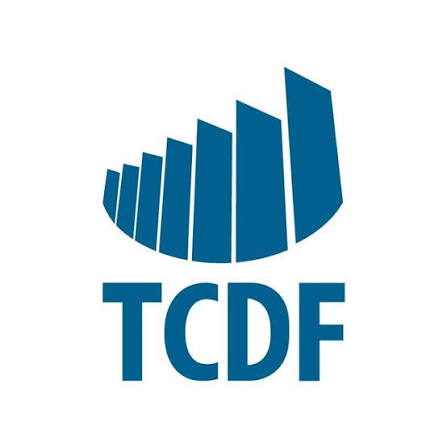

Estágio em Engenharia de DadosTribunal de Contas do Distrito Federal
Atuação em processos de tratamento de dados institucionais, construção de automações e apoio na organização de bases para análises, fiscalização e auditoria.
- Otimização de fluxos com Apache Airflow
- Processos ETL em bases SQL Server para apoiar análises
- Criação de dashboards para tomada de decisão
Python
SQL Server
Power BI
ETL
Apache Airflow
Dashboards